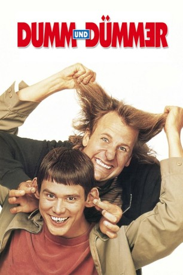

gesehen am 30.08.2016
gesehen am 30.08.2016Alternativ: Dumb & Dumber gesehen am 30.08.2016
 
 IMDB-Wertung: 7.3 / 10
IMDB-Wertung: 7.3 / 10  Metascore:
Metascore: 
Lloyd und sein Kumpel Harry sind einer dümmer als der andere, leben gemeinsam in einem heruntergekommen Appartment und träumen von einem eigenen Tiershop mit integrierter Würmerzucht. Die Beiden halten sich mit Gelegenheitsjobs über Wasser: Lloyd ist Chauffeur bei einem Limousinen-Service, während Harry als Hundefriseur arbeitet. Eines Tages lernt Lloyd auf einer seiner Fahrten die hübsche Mary Swanson kennen. Als er sie am Flughafen absetzt, vergisst sie scheinbar ihren Koffer. Lloyd stürmt hinterher, um ihr das Gepäckstück zurückzugeben - ohne zu ahnen, dass es sich dabei um das Lösegeld für Marys entführten Ehemann handelt. Die beiden Entführer staunen nicht schlecht, als sich Lloyd den Koffer vor ihrer Nase wegschnappt und damit verschwindet. Da er Mary nicht mehr erwischt, machen sich Lloyd und Harry auf eine verrückte Reise, um den Koffer zurückzubringen...
Jahr: 1994
Dauer: 112 Minuten
FSK: 12
Land: USA Studio: New Line CinemaTonspuren: DD2.0 - ,
Untertitel:
Auflösung: 1080p (1920x1080) Größe: 6973 MB
Genre: Komödie
Regisseur: Peter Farrelly,  Bobby Farrelly
Bobby Farrelly
Drehbuch: Peter Farrelly, Bennett Yellin, Bobby Farrelly
Soundtrack: Todd Rundgren
Darsteller:
 Jim Carrey als Lloyd Christmas
Jim Carrey als Lloyd Christmas Jeff Daniels als Harry Dunne
Jeff Daniels als Harry Dunne Lauren Holly als Mary Swanson
Lauren Holly als Mary Swanson Mike Starr als Joe Mentalino
Mike Starr als Joe Mentalino Karen Duffy als J.P. Shay
Karen Duffy als J.P. Shay Charles Rocket als Nicholas Andre
Charles Rocket als Nicholas Andre Teri Garr als Helen Swanson
Teri Garr als Helen Swanson Felton Perry als Detective Dale
Felton Perry als Detective Dale Rob Moran als Bartender
Rob Moran als Bartender Zen Gesner als Dale's Man #1
Zen Gesner als Dale's Man #1 Connie Sawyer als Elderly Lady
Connie Sawyer als Elderly Lady Lin Shaye als Mrs. Neugeboren
Lin Shaye als Mrs. Neugeboren Harland Williams als State Trooper
Harland Williams als State Trooper Charles Rahi Chun als Flight Attendant
Charles Rahi Chun als Flight Attendant Fred Stoller als Anxious Man at Phone
Fred Stoller als Anxious Man at PhoneDatei: X:\2-Dilogie(A-F)\Dumm und Dümmer\Dumm und Dümmer (1994, FSK12, 1920x1080).mkv seit 09.12.2015
Festplatte: HD Collection-2(A-Z)-3(A-M)
 Alle Filme aus Gruppe '2-Dilogie(A-F)\Dumm und Dümmer'
Alle Filme aus Gruppe '2-Dilogie(A-F)\Dumm und Dümmer'